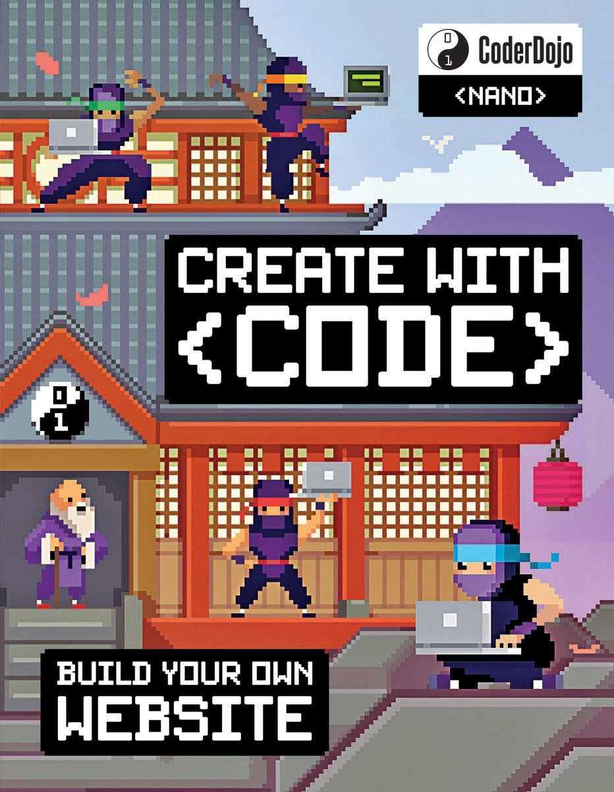
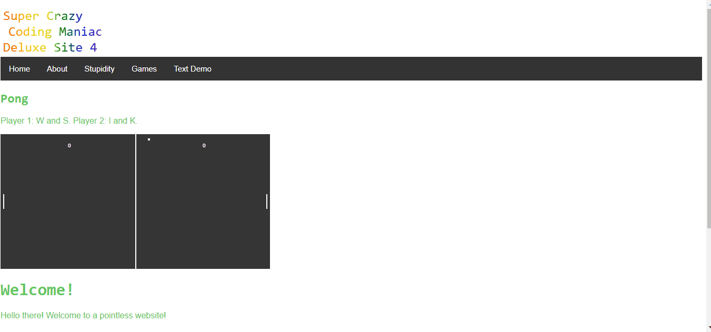
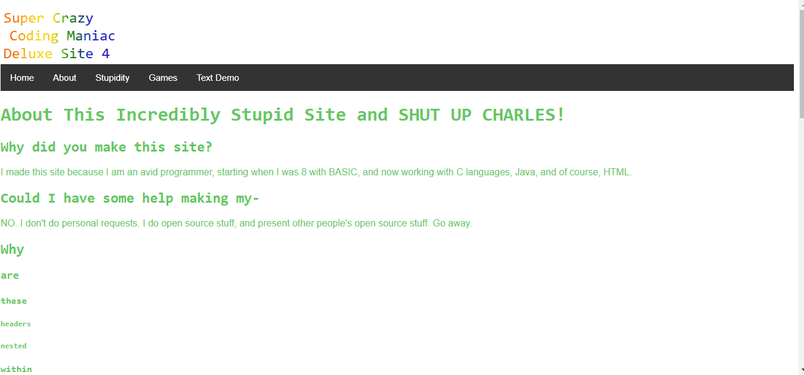
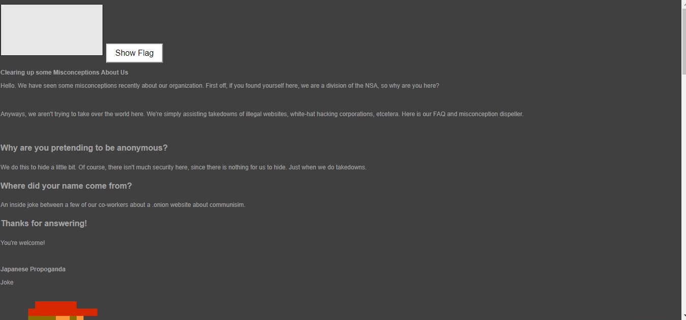
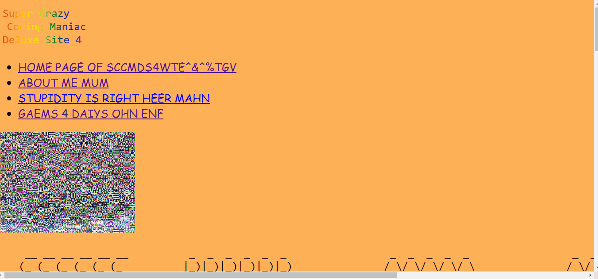
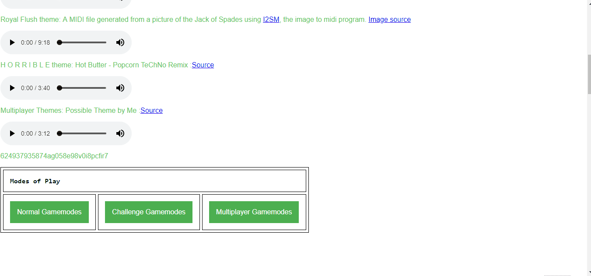
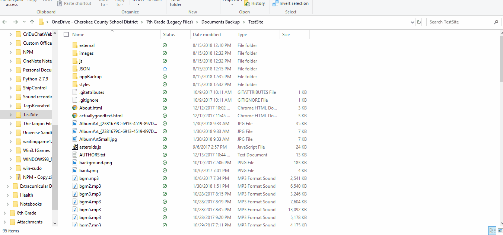
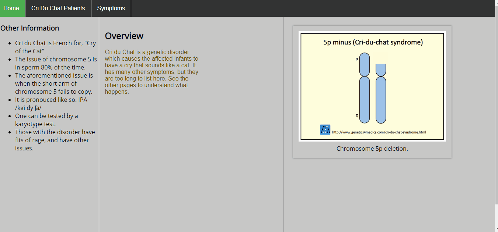

The GitHub Repo for this site is here!
You can find the source code of this website (and contribute to it) at this repository.
My Discord server is now live!
I have a discord server now! (I actually have for a month-ish as of this writing) To Tyler, thank you for being the first to join my Discord Server! So, without further ado, the server The Dudes is now public!
My Web Design Story
I have, many times, tried to make websites. None of them, however, ended up being released to the public. This is the first to reach the eyes of everyone, as it is the most organized. (and it came after I discovered GitHub pages)
Chapter 1: Humble Beginnings
Overview
The Soviet Onion was the HTML document set (which I refuse to acknowledge as a website) that I made immediately following my introduction to HTML. As thanks to the people who got me here, I am referencing CoderDojo Nano's, Create With <Code>: Build Your Own Website in this biography.
I sadly do not have the files anymore, as they were on an old laptop, which has since had a hard drive crash. As a result, I will simply tell you that it was based on a literal meme, which is as follows.

That image also ended up being the logo of the webs-I mean document set. I didn't use many special skills, and only based it on the book. However, the we-document set, became my first ever experience with web design.
Content
I don't quite remember what was there, but it did have some VBScripts that I had created, as well as some images of stuff I'd made.
Chapter 2: An Attempt at Greatness
Overview
This was an attempt at something better, which I started shortly after the Soviet Onion was finished, and declared a dead project a year and a half afterwards. You'll see why later. TestSite was also titled, and I quote myself exactly... actually no, you can see it for yourself also. I'll put up a repo for it later. (Probably later today, which is January 10th) It had a few games on it, one of which I made. That game will get its own subsection.
Pages
On the homepage of the website, I had placed some text, and cryptic messages. The color scheme was very strange, and so was the font choice.
At the bottom of the page, there was a strange button, which changed the logo to something else, changed the background to black, and mentioned something at the bottom of the about page, which is here.
If you had entered the correct passcode, you would have found the following page, a tribute to the Soviet Onion websi-document set.
For those who like r/ooer, you will surely recognize this style, used on Stupidity.html.
A key feature of the page is that the page title is randomly chosen from a pool of 100. This pool will not be shown, but when TestSite gets its own repo, you can find it in the sea of bad code.
The Almighty Game
I decided that I wanted to make an HTML5 Canvas game, and copied code from w3schools. I then proceeded to doctor it heavily, which made a sort of escape game. I cannot explain it without showing you, so here you go.
The code for this game is only actually being included in the repository for TestSite so that somebody else can fix it.
An Absolutely Totally Disorganized Directory
Just look at this trash!
LOOK AT THIS TRAAAAAAASH!!!!!!!!!!!!
Chapter 3: Knowledge is Applied
Gates
That's right! A two parter! It was at this point that I noticed on a choiceboard for some school project a web design category. You can probably see where this is going. I actually did this twice in the same year, and the first one was the Bill Gates Biography. I included a timeline, using vis.js, an extremely useful visualization library. This is shown below.

Cri Du Chat
Later that same year, I worked on a project for genetic disorders, and I chose Cri Du Chat. The entire website is documented below, and I believe that the work put into this one is more than the prior, though the Gates timeline was a better presentation. An important note here is that I learned about the three column layout, also from w3schools.
I cannot stress this enough! If you want to get into web design, you absolutely must go to w3schools for the most exquisite lessons in HTML, CSS, JS, PHP, and other web design stuff. I promise this isn't an ad, as it is free. They also provide certification.